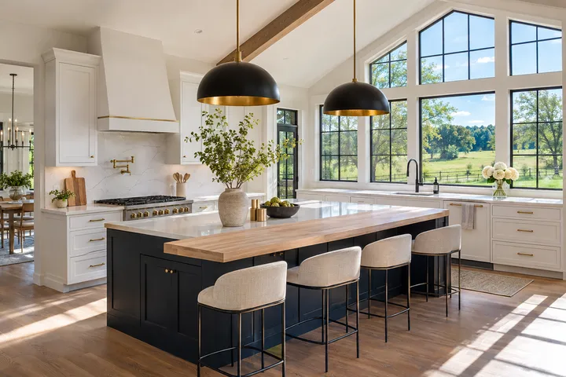

Estate Kitchen, Quartzite & Brass
Suits Potomac and Bethesda custom homes with room for a 10-foot island.
Based in Olney, Maryland. Repairs and remodeling within about 40 miles, in Maryland, DC and Virginia.
Kitchens, baths and lower levels in the styles that suit Montgomery and Howard County homes: pre-war colonials, mid-century Capes, 1990s customs and new estates. Use them to describe what you love.
Filter by room. Each room is tagged with the kind of home it suits, so you can point to the one closest to yours.
Suits Potomac and Bethesda custom homes with room for a 10-foot island.

Painted inset cabinetry and honed marble for 1920s–40s Chevy Chase and Bethesda homes.

For Kensington and Garrett Park’s tall-ceilinged Victorians and kit houses.

Navy island, vaulted ceiling and views: a fit for Clarksville, Glenelg and Highland.

Flat-panel cabinetry for 1990s–2000s homes in King Farm, Fallsgrove and North Potomac.

A classic two-tone scheme that works in almost any colonial.

Freestanding tub, curbless shower and heated floors for a true primary suite.

Subway tile, marble hex and walnut: right for a 1950s Bethesda Cape Cod.

A compact layout that still reads as a retreat.

Media wall, wet bar and a real egress window so the space feels like upstairs.

Painted built-ins turn a lower level into a library and lounge.

The millwork details that separate a good remodel from a great one.
Let’s talk about your home
Tell us what you have in mind. We’ll review your project and talk through the next step together.